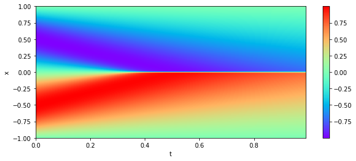
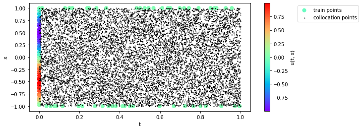
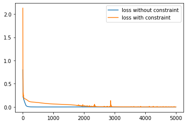
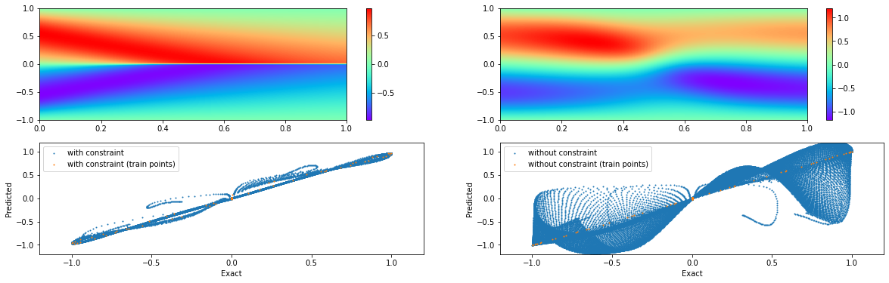
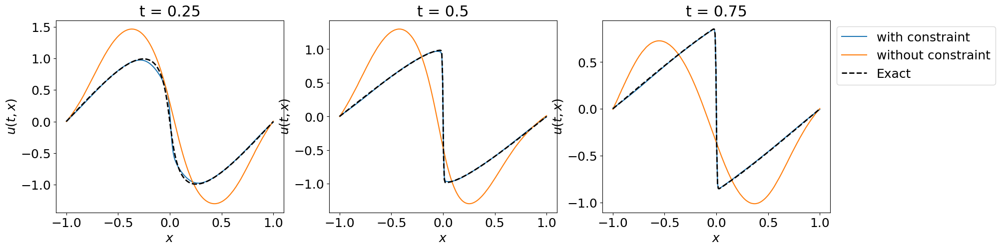
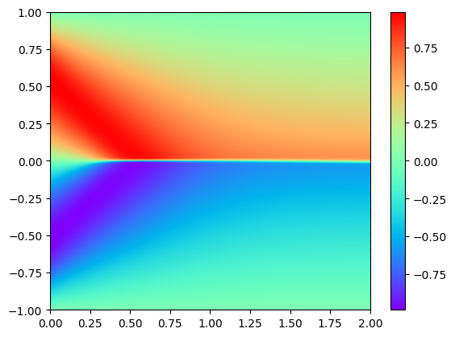

import os
os.environ["CUDA_VISIBLE_DEVICES"] = "3"
import numpy as np
import scipy
from sklearn.model_selection import train_test_split
import jax
import jax.random as jr
import jax.numpy as jnp
import flax.linen as nn
import optax
import matplotlib.pyplot as plt
from pyDOE2 import lhsPhysics-informed Neural Networks for Burgers’ Equation
Inspired from https://maziarraissi.github.io/PINNs/ and corresponding papers * Physics Informed Deep Learning (Part I): Data-driven Solutions of Nonlinear Partial Differential Equations * Physics Informed Deep Learning (Part II): Data-driven Discovery of Nonlinear Partial Differential Equations
Burgers’ equation is a nonlinear partial differential equation that describes the evolution of a velocity field in a fluid. It is a simplified model of the Navier-Stokes equations, which are used to describe the motion of fluids. Some interesting videos I watched on Navier-Stokes equations are: * The million dollar equation (Navier-Stokes equations) - a video created with manim * Navier-Stokes Equations - Numberphile * Why 5/3 is a fundamental constant for turbulence - A video by 3Blue1Brown * Navier Stokes Equation | A Million-Dollar Question in Fluid Mechanics * Navier-Stokes Equations - 3Blue1Brown
The burgers’ equation and its boundary conditions as used by Raissi et al. are:
\[ \begin{array}{l} u(t, x) : \text{velocity of the fluid at time } t \text{ and position } x,\\ \text{support : } x \in [-1,1],\ \ \ t \in [0,1],\\ \text{constraint : }\frac{\partial u}{\partial t} + u \frac{\partial u}{\partial x} - (0.01/\pi) \frac{\partial^2 u}{\partial x^2} = 0\\ \text{initial \& boundary conditions: } u(0,x) = -\sin(\pi x), \ \ u(t,-1) = u(t,1) = 0 \end{array} \]
Here, we are going to use a neural network to approximate \(u(t, x)\) function.
Imports
Inference
Here the task is to use the initial and boundary conditions data to train a neural network to approximate the solution of the PDE. We will use the ground truth data given by Raissi et al. to evaulate the accuracy of the neural network. Here are some pointers: * How was the ground truth data generated? * We will use only 100 data points from initial and boundary conditions to calculate data-driven MSE loss * We will use 10000 data points randomly sampled from the domain to calculate the constraint MSE loss. Note that we do not need any ground truth data to calculate this loss.
Load and visualize Data
data = scipy.io.loadmat('burgers_shock.mat')
t = data['t'].flatten()[:,None]
x = data['x'].flatten()[:,None]
Exact = np.real(data['usol']).T
X, T = np.meshgrid(x,t)
print(f"{X.shape=} {T.shape=} {Exact.shape=}")
plt.figure(figsize=(10, 4))
plt.imshow(Exact.T, aspect='auto', cmap='rainbow', origin='lower', extent=[t.min(), t.max(), x.min(), x.max()]);
plt.xlabel('t')
plt.ylabel('x')
plt.colorbar();
# plt.scatter(T.ravel(), X.ravel(), c=Exact.ravel(), cmap='coolwarm', s=50);X.shape=(100, 256) T.shape=(100, 256) Exact.shape=(100, 256)
Model
class Burgers_NN(nn.Module):
layers: list
@nn.compact
def __call__(self, t, x):
t = 2*t - 1
X = jnp.concatenate([t.reshape(1,1), x.reshape(1,1)], axis=1)
for num_neurons in self.layers:
X = nn.Dense(num_neurons)(X)
X = nn.tanh(X)
y = nn.Dense(1)(X)
return y.squeeze()
model = Burgers_NN(layers=[2, 200, 200, 200, 200])Generate training data
np.random.seed(0)
train_size = 100
collocation_size = 10000
# Boundary data
xb = 2 * lhs(1, train_size//2) - 1 # x in [-1, 1]
tb = np.zeros((train_size//2, 1)) # t = 0
ub = -jnp.sin(jnp.pi * xb) # u(0, x) = -sin(pi*x)
# Initial data
xi = jnp.ones((train_size//2, 1))
xi = xi.at[:len(xi)//2].set(-1)
ti = lhs(1, train_size//2) # t in [0, 1]
ui = jnp.zeros_like(ti) # u(t, 0) = 0
x_train = jnp.concatenate([xb, xi], axis=0).ravel()
t_train = jnp.concatenate([tb, ti], axis=0).ravel()
u_train = jnp.concatenate([ub, ui], axis=0).ravel()
# Collocation points
xc = 2 * lhs(1, collocation_size).ravel() - 1 # x in [-1, 1]
tc = lhs(1, collocation_size).ravel() # t in [0, 1]plt.figure(figsize=(10, 4))
plt.scatter(t_train, x_train, c=u_train, cmap='rainbow', s=50, label='train points');
plt.colorbar(label='u(t, x)')
plt.scatter(tc, xc, c='k', s=1, label='collocation points');
plt.xlabel('t')
plt.ylabel('x')
plt.legend(bbox_to_anchor=(1.2, 1), loc='upper left');
def loss_fn(params, constraint=True):
nn_fn = lambda t, x: model.apply(params, t, x)
vmap_nn_fn = jax.vmap(nn_fn)
u_pred = vmap_nn_fn(t_train, x_train)
print(f"{u_pred.shape=} {u_train.shape=}")
assert u_pred.shape == u_train.shape
mse = jnp.mean((u_pred - u_train) ** 2)
if constraint is True:
du_dx_fn = jax.grad(nn_fn, argnums=1)
du_dx = jax.vmap(du_dx_fn)(tc, xc)
print(f"{du_dx.shape=}")
du_dt_fn = jax.grad(nn_fn, argnums=0)
du_dt = jax.vmap(du_dt_fn)(tc, xc)
print(f"{du_dt.shape=}")
d2u_dx2_fn = jax.grad(du_dx_fn, argnums=1)
d2u_dx2 = jax.vmap(d2u_dx2_fn)(tc, xc)
print(f"{d2u_dx2.shape=}")
u = vmap_nn_fn(tc, xc)
f = du_dt + u * du_dx - (0.01/jnp.pi) * d2u_dx2
mse += jnp.mean(f ** 2)
return msedef fit(value_and_grad_fn, init_params, n_iters):
opt = optax.adam(1e-3)
init_state = opt.init(init_params)
@jax.jit
def one_step(params_and_state, aux):
params, state = params_and_state
loss, grads = value_and_grad_fn(params)
updates, state = opt.update(grads, state)
params = optax.apply_updates(params, updates)
return (params, state), loss
params_and_state = (init_params, init_state)
(params, state), loss_history = jax.lax.scan(one_step, params_and_state, None, length=n_iters)
return params, loss_historykey = jr.PRNGKey(3)
init_params = model.init(key, t_train[0], x_train[0])
n_iters = 5000
print("Training with constraint")
value_and_grad_fn = jax.value_and_grad(lambda params: loss_fn(params, constraint=True))
c_params, c_loss_history = fit(value_and_grad_fn, init_params, n_iters=n_iters)
print("Training without constraint")
value_and_grad_fn = jax.value_and_grad(lambda params: loss_fn(params, constraint=False))
params, loss_history = fit(value_and_grad_fn, init_params, n_iters=n_iters)
plt.plot(loss_history, label='loss without constraint')
plt.plot(c_loss_history, label='loss with constraint');
plt.legend();Training with constraint
u_pred.shape=(100,) u_train.shape=(100,)
du_dx.shape=(10000,)
du_dt.shape=(10000,)
d2u_dx2.shape=(10000,)
Training without constraint
u_pred.shape=(100,) u_train.shape=(100,)
params_list = [c_params, params]
labels = ['with constraint', 'without constraint']
pred_fn = jax.jit(jax.vmap(model.apply, in_axes=(None, 0, 0)))fig, ax = plt.subplots(2, 2, figsize=(20, 6))
for idx, (tmp_params, label) in enumerate(zip(params_list, labels)):
u_pred = pred_fn(tmp_params, T.ravel(), X.ravel())
u_pred_train = pred_fn(tmp_params, t_train, x_train)
mappable = ax[0, idx].imshow(u_pred.reshape(100, 256).T, cmap='rainbow', extent=[0, 1, -1, 1], aspect='auto')
fig.colorbar(mappable, ax=ax[0, idx])
ax[1, idx].scatter(Exact.ravel(), u_pred, s=1, label=label);
ax[1, idx].scatter(u_train, u_pred_train, s=1, label=f'{label} (train points)')
ax[1, idx].legend()
ax[1, idx].set_xlabel('Exact')
ax[1, idx].set_ylabel('Predicted')
ax[1, idx].set_ylim(-1.2, 1.2)
ax[1, idx].set_xlim(-1.2, 1.2)
Sliced prediction
fig, ax = plt.subplots(1, 3, figsize=(20, 5))
plt.rc('font', size=18)
for axes, t_val in zip(ax, [0.25, 0.50, 0.75]):
x = X.ravel()[T.ravel()==t_val]
t = jnp.ones_like(x) * t_val
u = Exact.ravel()[T.ravel()==t_val]
for tmp_params, label in zip(params_list, labels):
pred_u = pred_fn(tmp_params, t, x)
axes.plot(x, pred_u, label=label)
axes.plot(x, u, label='Exact', c='k', linestyle='--', linewidth=2)
axes.set_title(f't = {t_val}')
axes.set_xlabel('$x$')
axes.set_ylabel('$u(t, x)$')
axes.legend(bbox_to_anchor=(1, 1), loc='upper left');fig, ax = plt.subplots(1, 2, figsize=(20, 6))
tmp_params = params_list[0]
u_pred = pred_fn(tmp_params, T.ravel(), X.ravel())
u_pred_train = pred_fn(tmp_params, t_train, x_train)
mappable = ax[0].imshow(u_pred.reshape(100, 256).T, cmap='rainbow', extent=[0, 1, -1, 1], aspect='auto')
fig.colorbar(mappable, ax=ax[0])
ax[0].set_xlabel('$t$')
ax[0].set_ylabel('$x$')
ax[0].set_title('PINN prediction')
mappable = ax[1].imshow(Exact.reshape(100, 256).T, cmap='rainbow', extent=[0, 1, -1, 1], aspect='auto')
fig.colorbar(mappable, ax=ax[1])
ax[1].set_xlabel('$t$')
ax[1].set_ylabel('$x$')
ax[1].set_title('Exact solution');
Metrics
c_pred_u = pred_fn(c_params, T.ravel(), X.ravel())
pred_u = pred_fn(params, T.ravel(), X.ravel())
print(f"RMSE (constrained)= {np.sqrt(np.mean((Exact.ravel() - c_pred_u.ravel())**2)):0.4f}")
print(f"RMSE (unconstrained)= {np.sqrt(np.mean((Exact.ravel() - pred_u.ravel())**2)):0.4f}")RMSE (constrained)= 0.0206
RMSE (unconstrained)= 0.3494Extrapolate
t_extra = jnp.linspace(0, 2, 100)
x_extra = jnp.linspace(-1, 1, 256)
T_extra, X_extra = jnp.meshgrid(t_extra, x_extra)
u_pred = pred_fn(c_params, T_extra.ravel(), X_extra.ravel())
plt.imshow(u_pred.reshape((100, 256), order='F').T, cmap='rainbow', extent=[T_extra.min(), T_extra.max(), X_extra.min(), X_extra.max()], aspect='auto')
plt.colorbar();
Discrete time models
ac_data = scipy.io.loadmat("AC.mat")
ac_data['tt'].ravel()[180]0.9